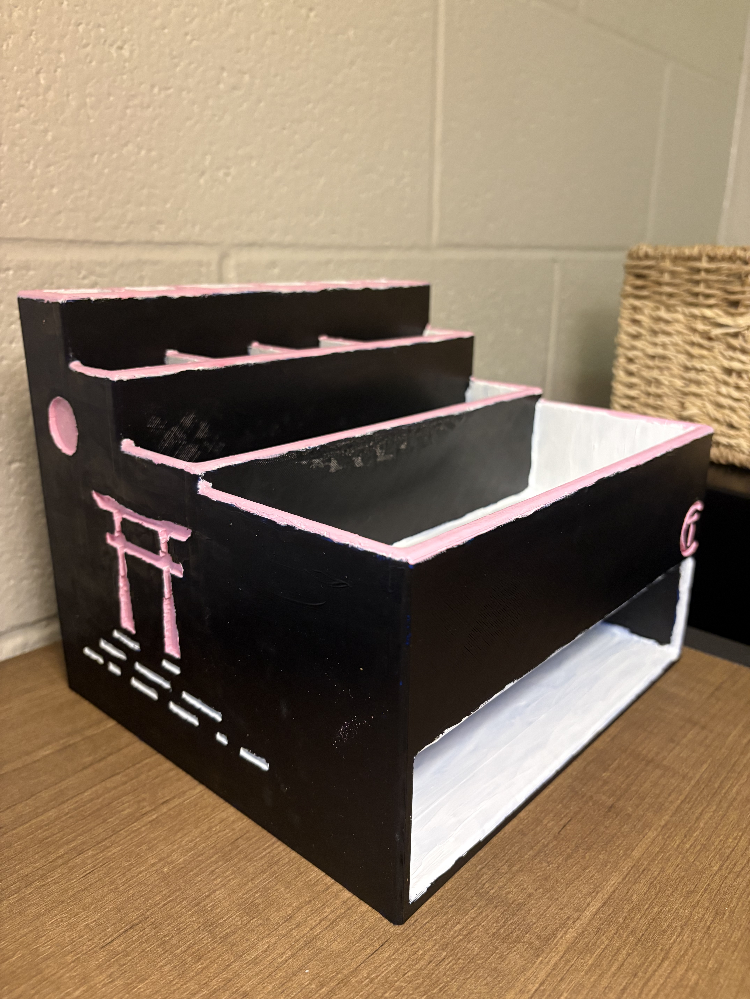
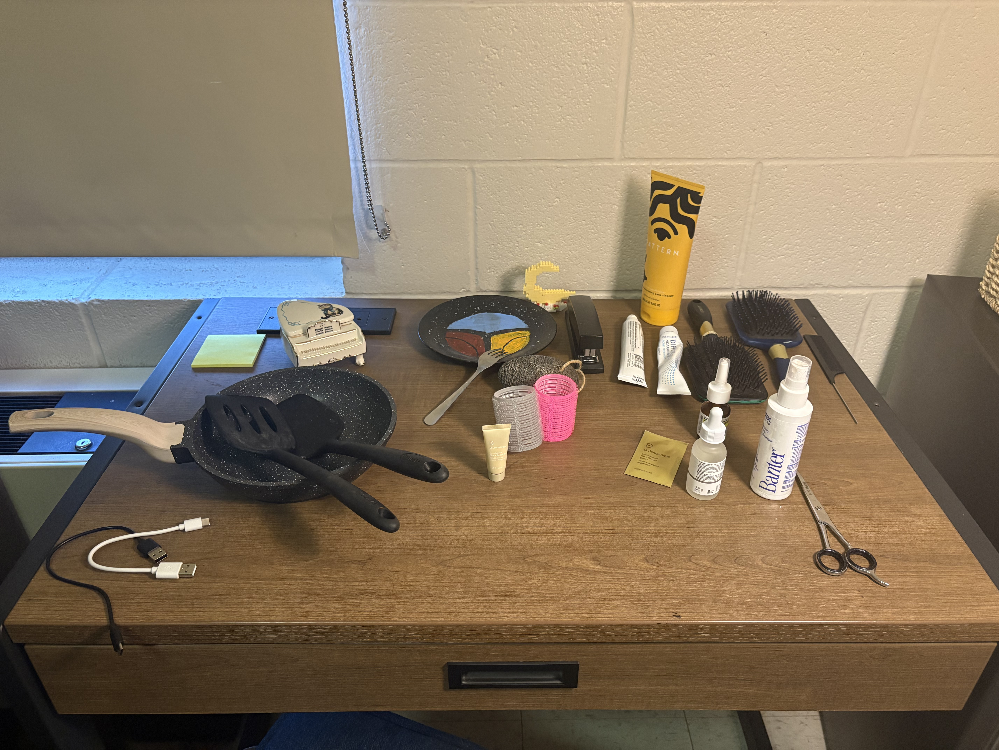
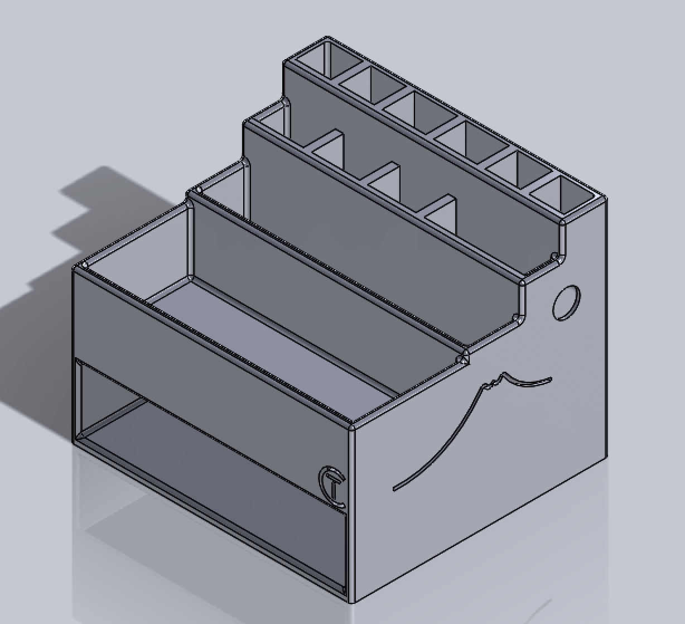
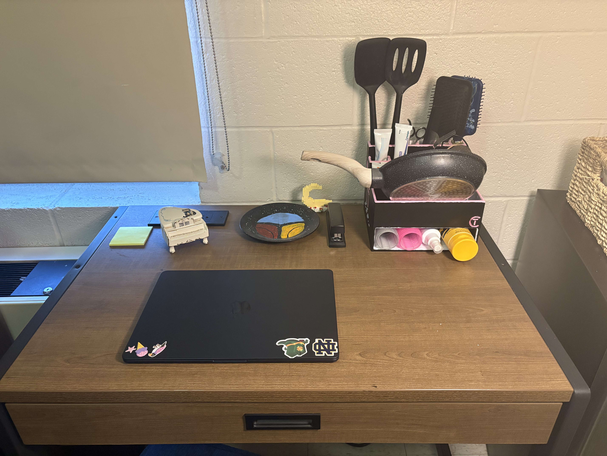

Desk Organizer | May 2026
Aside from my shoes clustered together, my floor is always pretty clean. But my desk? An absolute nightmare. The thing is, in a college dorm room, there's not much space.

Naturally, the first place I turned to was the Internet. Desk organizers are everywhere. TikTok is full of videos of dreamy dorm rooms where everything is neatly organized. My issue?
I couldn't find organizers that worked for my high-frequency use items. I bought a pan to cook with for the summer and two spatulas that were taking up so much space on my desk. My sunscreen was shoved into a drawer, causing me to forget to put it on some mornings.
You likely get the point. I wanted to be able to work at my own desk. Most organizers are made for makeup or pencils or kitchenware, but the reality is, the dorm room just doesn't have that much space. I wanted the compartments to be varying sizes, and to not perpetuate my own bad habits, I wanted everything in the organizer to be visible. To conserve space, I also wanted multiple levels to be able to store my pan.
Finding no luck on the Internet, I remembered that 3D printers existed on my college campus and figured, why not make my own?
The pan was the biggest size constraint and took up the most space on my desk. I figured that would decide the organizer's dimensions, since I intended for that to fit on its own shelf under everything. Then I started the CAD model in SOLIDWORKS, using a tiered layout to ensure everything was visible and account for the sizing of my various items.

I 3D-printed the organizer using ABS, and due to a classic scaling issue with the .STL file, the first iteration wasn't exactly ideal. The organizer was two inches too small to accommodate my pan (it's okay, I painted it to resemble a piano and gave it to my mom).
While making the scaling changes, inspiration struck to add more details. Most organizers online are pretty generic, either wooden or a plain color, no personality involved. If I was designing this, I might as well make it clear it's mine. I added an engraving of my initials in a corner, and Japanese minimalist-inspired designs on the sides, since I love to travel and Japan's at the top of my bucket list. For the fun of it, I painted the organizer to my liking.
This looks much better now, doesn't it? And my skin will thank me in a few decades when I don't get wrinkles.
